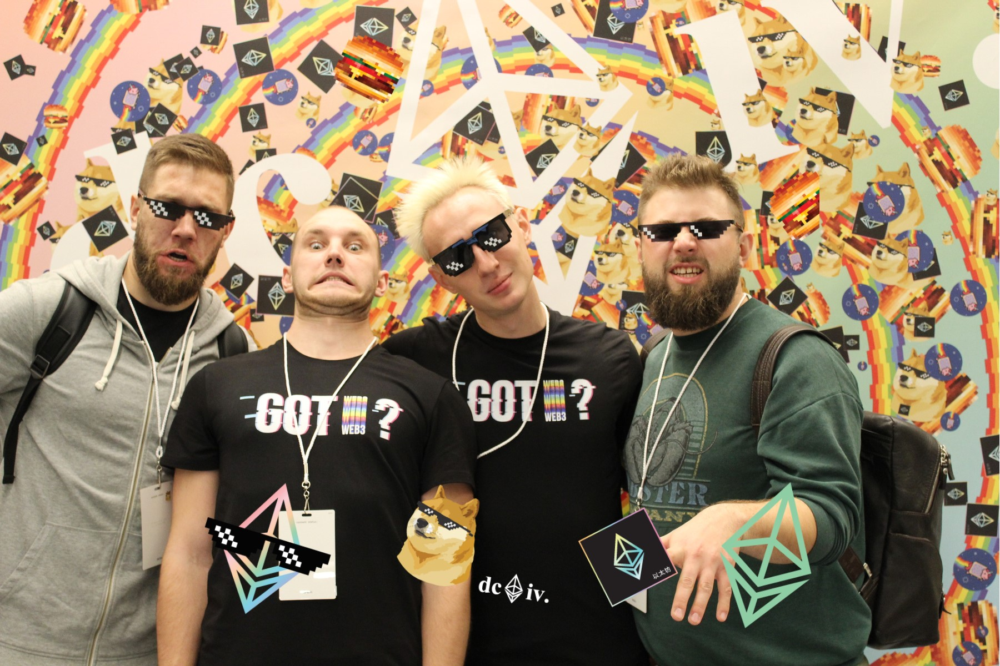
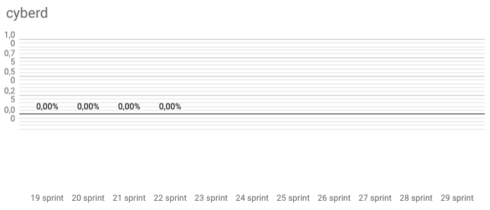
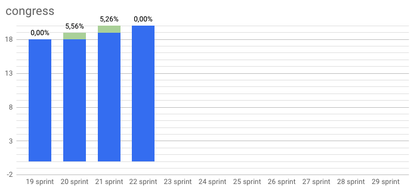
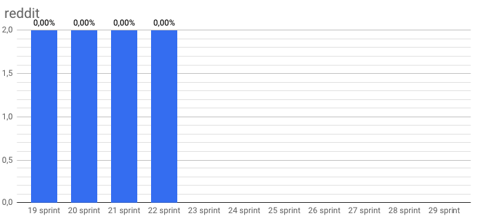

Never had it before and there it is again
by savetheales on 2018-11-12

Start: 2018-10-15
End: 2018-11-09
Сonclusion
Such a productive sprint! Seriously. We combined 21 and 22 sprints because in a second one was too codeless. Also we got useful acquaintances but more about that later.
First of all we update our web3 vision by @xhipster. It’s early draft for web3 summit but we have choose direction to develop for now. Also this vision includes our DURA spec that must displace URLs.
Secondly we clearly see two ways of web3 development: web3 around web3 foundation and web3 around ethereum foundation. We don’t now exactly what to do with this but it’s a fact :)
Also we have nice cyb release and cyb whitepaper draft. Now it’s available on desktop and include 3 nodes (ipfs, ethereum and cyberd). You can test searching by ipfs in wiki, connect local ipfs node, link hashes and try to install apps. Looks great actually.
One more amazing thing happened on blockchain week in Prague! Cyber•Academy made it first meetup in Europe! Also @xhipster had presentation on it and sent his regards to Zuckerberg. How it was you can see here. The most interesting part from 11:39 :)))
Enjoy! Because Powers That Be already saw our cyb ^^
P.S. Yeah! We were at devcon iv with all team in Prague! It was awesome for real! Thanks a lot for Neptune room and for orgs! It was new level of conference!
P.P.S. Part of our team was at web3 summit in Berlin and you know what? It was underground web3 movement. Why? Berlin Funkhous, devs presentation and really strong motivation to change modern web.
Changelog
Developers metrics
Epics done:
Epics next sprint TODO:
Working on minor tasks & bug fixing.
| Burndown | Storypoints done |
|---|---|
 |
158 |
| Stars | Forks | PRs |
|---|---|---|
 |
 |
 |
 |
 |  |
 |
 |
 |
|  |  |
 |
KPI’s
- cyberd: 1 of the 7 PoC iteration;
- cyb: yes release;
- chaingear: 0 of 100 ETH take from chaingear;
- #20 organization on gitcoin.co as at 2018/11/08;
- 32 of 1000 devs in devChat.
Community:
- Telegram channel: 20 subscribers;
- Telegram devChat: 32 subscribers;
- Steemit: 4 subscribers;
- Reddit: 2 subscribers;
- Twitter: 11 subscribers;
- Medium: 0 subscribers.
| Steemit | Dev Chat | Telegram Channel |
|---|---|---|
 |
 |
 |
| Medium | ||
|---|---|---|
 |
 |
 |